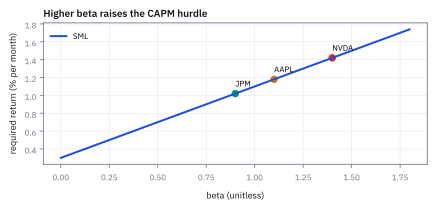
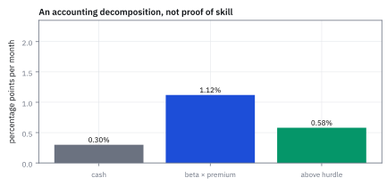
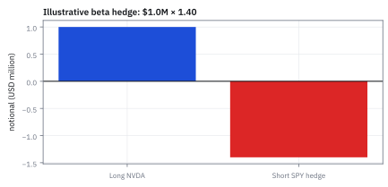
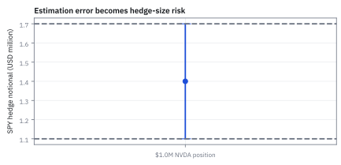

15.2 Capital Asset Pricing Model (CAPM) — Beta, Alpha, and Required Return
หักผลจากตลาดออกก่อนเรียกส่วนที่เหลือว่าฝีมือ
พอร์ตถือหุ้น NVDA มูลค่า \$1,000,000 มี beta 1.40 ถ้าเดือนนี้ cash ให้ 0.30% ตลาดคาดว่าจะให้ 1.10% และหุ้นทำได้จริง 2.00% ต้องทำผลงานขั้นต่ำ (hurdle) เท่าไร เกินคาดกี่ดอลลาร์ และต้อง short SPY กี่ดอลลาร์เพื่อ hedge ตลาด?
เฉลย: hurdle อยู่ที่ 1.42% ทำได้เกินคาด \$5,800 (จากส่วนต่าง 0.58%) และต้อง short SPY มูลค่า \$1,400,000 เพื่อตัดความเสี่ยงตลาดออกทั้งหมด.
ศัพท์ที่ใช้ในหัวข้อนี้
- Capital Asset Pricing Model (CAPM)
- model ปัจจัยเดียวที่เชื่อม expected excess return กับ market beta ใช้ตั้ง required return และแยก market exposure จาก residual performance
- beta
- sensitivity ของ asset excess return ต่อ market excess return ใช้กำหนด hedge ratio และ market-risk exposure
- alpha
- intercept ของ excess-return regression หลังหัก market exposure ใช้ตั้งคำถามว่าผลตอบแทนเกิน model หรือเป็น noise
- risk-free rate
- ผลตอบแทนของ cash proxy ใน horizon เดียวกัน ใช้แปลง total return เป็น excess return
- เส้น Security Market Line (SML)
- เส้น expected return เทียบ beta ภายใต้ CAPM ใช้เปรียบ required return ของ assets ที่มี market exposure ต่างกัน
- systematic risk
- ส่วนของความเสี่ยงที่เคลื่อนร่วมกับตลาดและกระจายด้วย diversification ไม่หมด ใช้เป็น risk ที่ CAPM ให้ราคา
- variance
- ค่าเฉลี่ยของส่วนเบี่ยงเบนยกกำลังสอง ใช้วัดความเสี่ยงรวมและแยกก้อนตลาดออกจากก้อนเฉพาะตัว
- notional
- มูลค่าอ้างอิงที่ position สัมผัสโดยไม่จำเป็นต้องเท่ากับเงินสดที่จ่าย ใช้คำนวณขนาด market exposure และ derivatives
- hedge
- position ที่ออกแบบให้ชดเชย exposure ของ position หลัก ใช้ลดความเสี่ยงตลาดโดยยอมเหลือ basis และ execution risk
- short
- สถานะที่ได้กำไรเมื่อสินทรัพย์อ้างอิงลดลงและขาดทุนเมื่อขึ้น ใช้สร้างขา hedge แต่ต้องมี borrow หรือ derivatives ที่เหมาะสม
- long
- สถานะที่ได้กำไรเมื่อสินทรัพย์อ้างอิงขึ้นและขาดทุนเมื่อราคาลง ใช้บอกทิศทางของ position หลักก่อนวาง hedge
- basis
- ส่วนต่างระหว่าง exposure ที่ hedge ตั้งใจชดเชยกับ exposure ที่เหลือจริง ใช้ติดตามความเสี่ยงเมื่อ benchmark และหุ้นไม่เคลื่อนตรงกัน
- Capital Market Line (CML)
- เส้นตรงที่ลากเชื่อมระหว่าง risk-free rate กับพอร์ตตลาดบน efficient frontier ใช้บอกระดับ expected return สูงสุดที่ทำได้ต่อหนึ่งหน่วย total risk
สัญลักษณ์ที่ใช้ในหัวข้อนี้
| สัญลักษณ์ | ความหมาย | หน่วย |
|---|---|---|
| $R_{i,t}$ | ผลตอบแทนของสินทรัพย์ $i$ | decimal return ต่อเดือน |
| $R_{m,t}$ | ผลตอบแทนตลาดของ SPY | decimal return ต่อเดือน |
| $R_{f,t}$ | ผลตอบแทนของ cash proxy | decimal return ต่อเดือน |
| $R_{m,t}-R_{f,t}$ | ผลตอบแทนส่วนเกินของตลาด | decimal return ต่อเดือน |
| $\beta_i$ | ค่า market beta ของสินทรัพย์ | unitless |
| $\alpha_i$ | จุดตัดแกนของ CAPM | decimal return ต่อเดือน |
| $\epsilon_{i,t}$ | residual เฉพาะสินทรัพย์ | decimal return ต่อเดือน |
| $V_i$ | มูลค่า position หุ้น | USD |
| $N_h$ | notional ของ market hedge | USD |
| $\sigma_m^2,\sigma_\epsilon^2$ | variance ของตลาดและ residual | decimal-return-squared ต่อเดือน |
| $r^*, \sigma$ | hurdle return บน CML และ volatility ของโครงการ | decimal return, volatility |
| $P, X$ | ราคาซื้อของสินทรัพย์และกระแสเงินสดสุ่มใน 1 ปีข้างหน้า | USD |
ที่มาที่ไป: คำถามว่าอะไรคือฝีมือ อะไรคือแค่รับความเสี่ยง
ปัญหาที่ทฤษฎีนี้เกิดมาเพื่อแก้คือ ผู้จัดการกองทุนที่ทำผลตอบแทนได้สูงกว่าตลาด อาจแค่ถือของที่เสี่ยงกว่าตลาดเฉย ๆ ไม่ได้มีฝีมืออะไรเลย
ถ้าไม่มีวิธีแยกสองอย่างนี้ ค่าธรรมเนียมการจัดการก็ถูกจ่ายไปกับสิ่งที่ผู้ลงทุนทำเองได้ฟรี
William Sharpe, John Lintner และ Jan Mossin พัฒนาคำตอบขึ้นในช่วงกลางทศวรรษ 1960 โดยต่อยอดจากงานจัดพอร์ตของ Markowitz
ใจความคือตลาดจ่ายผลตอบแทนส่วนเกินให้เฉพาะความเสี่ยงที่กระจายทิ้งไม่ได้เท่านั้น ส่วนที่กระจายทิ้งได้ไม่ได้ค่าตอบแทน Sharpe ได้รางวัลโนเบลจากงานนี้ในปี 1990
Worked Example — โจทย์และสิ่งที่ให้มา
โจทย์ให้อะไรมาบ้าง: CAPM เป็น baseline ภายใต้ assumptions เช่น investors สนใจ mean–variance, borrow/lend ที่ rate เดียว และ market portfolio เป็น efficient portfolio assumptions เหล่านี้แรง จึงใช้ model เป็น benchmark ไม่ใช่กฎธรรมชาติ
ขั้นที่ 1 — ลองด้วยมือ: ผู้จัดการสองคน ใครเก่งกว่ากัน
ก่อนสูตร ลองโจทย์เล็ก ๆ ตลาดขึ้น 10% เงินสดให้ 2% ผู้จัดการสองคนรับความเสี่ยงตลาดไม่เท่ากัน
B ทำได้ 12% ชนะ A ที่ทำได้ 6% สองเท่า แต่ B ถือของที่เกาะตลาด 1.5 เท่า ในปีที่ตลาดขึ้น 10% ใครก็ตามที่ถือ beta 1.5 ด้วยเงินกู้ราคาถูก จะได้ 14% โดยไม่ต้องคิดอะไร B จึงทำได้ *ต่ำกว่า* สิ่งที่ซื้อได้ฟรีอยู่ 2%
A ได้พอดีกับที่ควรได้ ไม่มีฝีมือแต่ก็ไม่เสียหาย เกณฑ์ที่ใช้เทียบ (hurdle) เปลี่ยนตามว่าแต่ละคนรับความเสี่ยงตลาดเท่าไร นี่คือทั้งหมดของทฤษฎีในหนึ่งบรรทัด
สูตรข้างล่างแค่เขียนคำว่า “ราคาต่อหนึ่งหน่วย beta” ให้เป็นสัญลักษณ์ และบอกว่า beta วัดจากไหน
สองบรรทัดแรกคือส่วนเกินที่ตลาดจ่ายต่อหนึ่งหน่วยของการเกาะตลาด
บรรทัดที่สี่และหกคือเกณฑ์ที่แต่ละคนควรทำได้ คิดจากอัตราปลอดภัยบวกการเกาะตลาดคูณส่วนเกิน
อ่านผล: คนที่ได้ 12% แพ้คนที่ได้ 6% เพราะเขารับความเสี่ยงมากกว่าสามเท่า ตัวเลขผลตอบแทนดิบจึงเทียบกันตรง ๆ ไม่ได้
ขั้นที่ 2 — นิยามของสมการที่ใช้วัด exposure
บรรทัดนี้เป็น นิยาม ของแบบจำลองที่เราเลือกใช้ ไม่ใช่ความจริงที่พิสูจน์ได้ มันคือสมการเส้นตรงของหัวข้อ 15.1 โดยให้ตัวที่ใช้ทำนายเป็นผลตอบแทนส่วนเกินของตลาด และตัวที่ถูกทำนายเป็นของหุ้น ค่าความชันจึงเท่ากับ covariance กับตลาด หารด้วย variance ของตลาด ตามสูตรที่พิสูจน์ไว้แล้วในหัวข้อนั้น การเลือกใช้สมการนี้เป็นสมมติฐาน ไม่ใช่ข้อเท็จจริง และหัวข้อ 15.3 จะแสดงว่ามันแคบเกินไป
ทุก return อยู่ใน decimal ต่อเดือน; $\beta_i$ unitless และ $\alpha_i$ กับ residual อยู่ใน decimal return ต่อเดือน จึงบวกกันได้
นี่คือสมการเส้นตรงของหัวข้อ 15.1 โดยให้ $x$ เป็นผลตอบแทนส่วนเกินของตลาด และ $y$ เป็นของหุ้น $\beta_i$ จึงคือ slope $S_{xy}/S_{xx}$ คือ covariance กับตลาดหารด้วย variance ของตลาด และ $\alpha_i$ คือ intercept
ขั้นที่ 3 — required return บน SML
เมื่อรู้ว่าเกาะตลาดแค่ไหน ก็บอกได้ว่ามันควรได้ผลตอบแทนเท่าไรถึงจะยุติธรรม สูตรข้างล่างแยกให้ชัดว่าบรรทัดไหนเป็นพีชคณิต และบรรทัดไหนเป็นความเชื่อ มีบรรทัดเดียวที่เป็นความเชื่อ คือบรรทัดที่เจ็ด และทั้งหัวข้อ 15.7 คือหลักฐานว่ามันไม่จริงเสมอ
ยกสมการของขั้นที่ 2 มาแล้วหาค่าเฉลี่ยทั้งสองข้าง ความพลาดที่เหลือมีค่าเฉลี่ยศูนย์ ซึ่งเป็นผลบังคับของเงื่อนไขในหัวข้อ 15.1 ไม่ใช่ข้อสมมติที่เพิ่มเข้ามา มันจึงหายไปฟรี ๆ
บรรทัดที่เจ็ดต่างออกไป มันคือข้อสมมติเดียวที่เพิ่มเข้ามา และเป็นข้อที่ควรสงสัยที่สุดในหัวข้อนี้ มันบอกว่าในดุลยภาพจะไม่มีใครได้ผลตอบแทนเกินจากความเสี่ยงที่รับ
ย้ายข้างแล้วอ่านผล ผลตอบแทนที่ควรได้ขึ้นกับการเกาะตลาดอย่างเดียว ไม่ขึ้นกับความผันผวนเฉพาะตัวของหุ้นเลย
นี่คือข้ออ้างที่แรงที่สุดของแบบจำลองนี้ และเป็นจุดที่งานวิจัยสามสิบปีหลังใช้โจมตี เพราะข้อมูลจริงไม่ค่อยเชื่อฟัง
ขั้นที่ 4 — พิสูจน์ที่มาของ Beta และสมการดุลยภาพ CAPM จากจุดสัมผัส CML
สมการ CAPM ไม่ได้ตกลงมาจากฟ้า แต่เป็นเงื่อนไขดุลยภาพที่บังคับว่าไม่มีสินทรัพย์ใดทะลุเส้น Capital Market Line (CML) ได้
ลองผสมพอร์ตระหว่างตลาด $M$ กับหุ้น $i$ ด้วยน้ำหนัก $w$ เมื่อ $w=0$ พอร์ตนี้คือตลาดพอดี เส้นโค้งของพอร์ตผสมจึงต้องสัมผัสกับ CML ที่จุดนั้น
เมื่อจับความชันของเส้นโค้งที่จุด $w=0$ เท่ากับความชันของ CML เทอมพีชคณิตจะตัดกันจนเหลือสูตร beta ที่เรารู้จักพอดี
สร้างพอร์ตผสมระหว่างหุ้นกับตลาด แล้วหา derivative ของ return และ volatility เทียบกับน้ำหนัก $w$
จังหวะสำคัญอยู่ที่จุด $w=0$ พอร์ตผสมกลายเป็นพอร์ตตลาดตัวแม่ ความชันของเส้นโค้งในระนาบความเสี่ยงและผลตอบแทนจึงต้องเท่ากับความชันของ CML พอดี
ถ้าความชันไม่เท่ากัน แปลว่ามีพอร์ตผสมที่ทะลุเหนือ CML ซึ่งขัดแย้งกับข้อเท็จจริงว่าตลาดคือพอร์ตที่ Sharpe ratio สูงสุด
เมื่อแก้สมการ พจน์ $-1$ จากฝั่งซ้ายจะหักล้างกับส่วนต่างผลตอบแทน จนเหลือเฉพาะอัตราส่วน covariance ต่อ variance ของตลาด ซึ่งเรานิยามว่า $\beta_i$
ขั้นที่ 5 — ตัวอย่าง hurdle หนึ่งเดือน
CAPM ต้องการส่วนต่างระหว่างผลตอบแทนตลาดกับเงินสดก่อน แล้วจึงคูณด้วย beta ส่วนต่างนี้คือราคาที่ตลาดจ่ายให้กับการรับความเสี่ยงหนึ่งหน่วย
ตลาดจ่ายส่วนเกิน 0.8% ต่อเดือนให้กับความเสี่ยงหนึ่งหน่วย NVDA รับความเสี่ยง 1.40 หน่วย จึงควรได้ส่วนเกิน 1.12% บวกกับเงินสด 0.3% รวมเป็น 1.42% ต่อเดือน
ขั้นที่ 6 — ผลตอบแทนเดือนหนึ่งต่างจากค่าเฉลี่ยตามแบบจำลองเท่าไร
หาผลต่างของผลที่เกิดขึ้นจริงกับค่าเฉลี่ยที่แบบจำลองให้ ผลต่างนี้ยังไม่ใช่ estimator regression alpha
เดือนสมมตินี้สูงกว่าค่าเฉลี่ยตาม CAPM 0.58 จุดเปอร์เซ็นต์ ผลต่างอาจมาจากตลาดเดือนนั้นต่างจาก expected value หรือจากผลเฉพาะหุ้น การหา regression alpha ต้องใช้ผลตอบแทนตลาดที่เกิดขึ้นจริงในหลายงวด ไม่ใช่ลบ expected hurdle จากผลเดือนเดียวแล้วเรียกว่า alpha
ขั้นที่ 7 — แยกความเสี่ยงและขนาด hedge
แปลงเป็นการกระทำจริง คือถ้าอยากได้เฉพาะฝีมือโดยไม่รับความเสี่ยงตลาด ต้องขายดัชนีเท่าไร
variance decomposition ต้องสมมติ residual ไม่สัมพันธ์กับตลาด; notional hedge มีหน่วย USD และเครื่องหมาย short อยู่ตรงข้ามกับ long stock position
มาจากไหน: $R_i=\alpha+\beta R_m+\epsilon$ กับ $\epsilon$ ไม่สัมพันธ์กับตลาด กฎ variance ของผลบวกในหัวข้อ 6.5 ให้ $\beta^2\operatorname{Var}(R_m)+\operatorname{Var}(\epsilon)$ พจน์ไขว้หายเพราะ covariance เป็นศูนย์
ลองตัวเลข: ตลาดแกว่ง 4% ต่อเดือน residual แกว่ง 5% ต่อเดือน กับ beta 1.40: ก้อนตลาด $1.4^2\times16=31.36$ บวกก้อนเฉพาะตัว 25 ได้ 56.36 ถอดรากได้ 7.51% ต่อเดือน ก้อนตลาดคือ 31.36/56.36 = 56% ของทั้งหมด และเป็นก้อนเดียวที่ hedge ด้วยดัชนีลบออกได้
ขั้นที่ 8 — ทดสอบนัยสำคัญของ Alpha: โชคหรือฝีมือ และกับดักผู้จัดการหลายคน
เมื่อผู้จัดการกองทุนมี alpha เป็นบวก คำถามสำคัญคือผลงานนั้นมาจาก skill จริง หรือเป็นเพียงความบังเอิญของสถิติ
สมมติผู้จัดการคนหนึ่งชนะตลาด 9 ใน 10 ปี ถ้าเขาไม่มีฝีมือเลย โอกาสโยนเหรียญชนะ 9 ครั้งขึ้นไปมีเพียง 1.07% ซึ่งดูเหมือนมีนัยสำคัญ
แต่หากในตลาดมีผู้จัดการ $M$ คน แล้วเราเลือกดูเฉพาะคนที่ผลงานดีที่สุด โอกาสที่คนชนะเลิศจะชนะ 9 ปีด้วยดวงล้วน ๆ จะพุ่งสูงขึ้นอย่างน่าตกใจ
ภายใต้สมมติฐานว่าไม่มีฝีมือ ผลการชนะตลาดแต่ละปีมี independence ต่อกันด้วยความน่าจะเป็นครึ่งหนึ่ง จึงมี distribution แบบ binomial
สำหรับผู้จัดการคนเดียว โอกาสชนะ 9 จาก 10 ปีคิดเป็น 11 ใน 1024 หรือประมาณ 1.07% ดูเหมือนปฏิเสธดวงได้
แต่เมื่อมีผู้จัดการ $M=20$ คน โอกาสที่คนเก่งที่สุดจะชนะ 9 ปีด้วยความบังเอิญเพิ่มเป็น 19.42%
และถ้าค้นหาจาก 100 คน โอกาสเจออัจฉริยะปลอมจะพุ่งเป็น 65.89% นี่คือ data snooping bias ที่ต้องระวังเมื่อวัด alpha
ขั้นที่ 9 — ประเมินโครงการด้วย Capital Market Line (CML)
ใช้เส้น CML เป็นเกณฑ์ hurdle สำหรับโครงการที่รับความเสี่ยงรวม $\sigma = 40\%$ เช่น ท่อส่งน้ำมันที่ซื้อหุ้นละ \$875 และคาดว่าจะจ่าย \$1,000 ใน 1 ปี
โครงการท่อส่งน้ำมันให้ผลตอบแทนคาดหวัง 14.29% แต่มีความผันผวนสูงถึง 40% ต่อปี
เส้น CML มีความชันเท่ากับ 1.00 แสดงว่าตลาดให้ผลตอบแทนส่วนเกิน 1% ต่อทุก 1% ของความเสี่ยงรวม
สำหรับความผันผวน 40% เกณฑ์ CML ต้องการผลตอบแทนถึง 45% แต่โครงการให้แค่ 14.29% จึงปฏิเสธการลงทุน
ขั้นที่ 10 — หามูลค่ายุติธรรมของสินทรัพย์ด้วย CAPM
คำนวณราคาซื้อที่ยุติธรรม $P$ ในวันนี้ สำหรับสินทรัพย์ที่จะจ่ายกระแสเงินสดสุ่ม $X$ ในอีก 1 ปีข้างหน้า
ราคายุติธรรมคือมูลค่าปัจจุบันคิดลดด้วยอัตราปลอดความเสี่ยง หักออกด้วยส่วนลดความเสี่ยงตลาด
พจน์แรก \$952.38 คือมูลค่าหากกระแสเงินสด \$1,000 ปราศจากความเสี่ยง
พจน์หลัง \$304.76 คือส่วนลดที่นักลงทุนเรียกร้องเพื่อชดเชย covariance กับตลาด
ขั้นที่ 11 — ตัวอย่างจากต้นทาง: alpha ของหุ้นธนาคารจาก เส้น Security Market Line
ใช้ห้าเดือนของหัวข้อ 15.1 ตลาดให้ +2.0, −1.5, +0.5, +3.0, −1.0% หุ้นธนาคารให้ +3.4, −2.8, +0.2, +5.1, −1.4% หัวข้อ 15.1 หา beta ได้ 1.7075 ตรงนี้อ่านมันในภาษา CAPM โดยให้ดอกเบี้ยปลอดความเสี่ยงเป็นศูนย์ก่อน
alpha คือได้จริงลบที่ควรได้ตามความเสี่ยงที่แบก ตลาดให้เฉลี่ย 0.60% ต่อเดือน หุ้นที่มี beta 1.7075 ควรได้ 1.0245% แต่ได้จริง 0.90% จึงต่ำกว่าเส้น 0.1245% ต่อเดือน หรือราว 1.49% ต่อปี
ถ้าดอกเบี้ยปลอดความเสี่ยงเป็น 0.15% ต่อเดือน ผลตอบแทนที่ควรได้ลดเหลือ 0.9184% alpha ขยับเข้าใกล้ศูนย์เหลือ −0.0184% เพราะ beta มากกว่า 1 พจน์ของดอกเบี้ยจึงลดสิ่งที่ควรได้ ใส่ดอกเบี้ยให้ถูกก่อนตัดสินว่าใครมีฝีมือ
ขั้นที่ 12 — แยกความเสี่ยงเป็นส่วนของตลาดกับส่วนของหุ้นเอง
variance ของหุ้นแยกเป็นสองก้อนตามบรรทัดที่สามของ CAPM ส่วนที่มาจากตลาด กับส่วนที่เป็นของหุ้นตัวนี้เอง
ความเสี่ยงของหุ้นธนาคารตัวนี้ 98.84% มาจากตลาด เหลือของตัวเองแค่ 1.16% ส่วนแรกเรียกว่า systematic risk กระจายทิ้งไม่ได้ ตลาดจึงจ่ายค่าตอบแทนให้ ส่วนหลังเรียกว่า idiosyncratic risk กระจายทิ้งได้ CAPM จึงไม่จ่ายอะไรให้เลย สัดส่วนของตลาดเท่ากับ R² ของหัวข้อ 15.1 พอดี
ขั้นที่ 13 — alpha มีนัยสำคัญไหม และ beta แม่นแค่ไหน
ใช้ residual ของหัวข้อ 15.1 ผลรวมกำลังสอง 0.5022 หาความคลาดเคลื่อนของ alpha และช่วงความไม่แน่นอนของ beta ที่ห้าเดือนมีอิสระเหลือแค่สาม
t ของ alpha คือ −0.64 ห่างจากศูนย์ไม่ถึงหนึ่งเท่าของความคลาดเคลื่อน สรุปไม่ได้เลยว่าหุ้นตัวนี้ทำผลงานต่ำกว่าเส้นจริง ส่วน beta มี t ถึง 16 แปลว่าต่างจากศูนย์แน่นอน แต่ไม่ได้แปลว่ารู้ค่าแม่น
ที่ห้าเดือน ค่าวิกฤตของ t ที่มีอิสระสามคือ 3.182 สูงกว่า 1.96 มาก ช่วง 95% ของ beta จึงกว้างจาก 1.37 ถึง 2.05 ตัวเลข R² สูงไม่ได้ช่วยให้ช่วงนี้แคบลง ต้องใช้ข้อมูลมากขึ้นเท่านั้น
ขั้นที่ 14 — เอา beta ไปตั้งขนาด hedge และดูว่าเหลือความเสี่ยงเท่าไร
ถือหุ้นธนาคาร \$10,000,000 อยากตัดความเสี่ยงตลาดออก ขาย short กองทุนดัชนีที่ซื้อขายในตลาด หรือ exchange-traded fund (ETF) เท่าไร และหลัง hedge เหลือความผันผวนเท่าไร
short ETF ของดัชนี \$17.07 ล้าน พอร์ตเหลือแค่ alpha กับส่วนที่หุ้นแกว่งเอง ความผันผวนรายเดือนลดจาก 3.292% เหลือ 0.354% หรือลดลง 89.2% ใช้ตัวหารเดียวกันทั้งก่อนและหลังจึงเทียบกันได้
แต่ช่วงของ beta ในขั้นที่ 13 บอกว่าขนาด hedge ที่ถูกอาจอยู่ได้ทั้ง 13.7 ถึง \$20.5 ล้าน ต่างกันถึง 6.8 ล้าน เพราะห้าเดือนน้อยเกินไป R² 98.84% ที่ดูสวยมาจากข้อมูลห้าจุดที่เส้นตรงซึ่งมี parameter สองตัวฟิตได้ง่าย ไม่ใช่หลักฐานว่าแบบจำลองเก่ง
ขั้นที่ 15 — ทำไมพอร์ตตลาดคือพอร์ต Sharpe ของทุกคน และ Jensen's alpha
หุ้นสามตัวมีมูลค่าตลาด 600, 300 และ \$100 พันล้าน นักลงทุนสองคนใช้ mean-variance เหมือนกัน A มีเงิน 1 ล้าน ใส่ส่วนเสี่ยง 70% B มีเงิน 3 ล้าน ใส่ส่วนเสี่ยง 40% ทั้งคู่ถือส่วนเสี่ยงเป็นพอร์ต Sharpe เดียวกัน s = (0.6, 0.3, 0.1)
ถ้าทุกคนเป็น mean-variance และเชื่อตัวเลขชุดเดียวกัน ทุกคนถือส่วนเสี่ยงเป็นพอร์ต Sharpe เดียวกัน ต่างกันแค่สัดส่วนที่แบ่งไปถือเงินสด รวมเงินของทุกคนในหุ้นตัวที่ 1 ได้ 1.14 ล้าน จากส่วนเสี่ยงรวม 1.9 ล้าน คือ 60% พอดี พอร์ตตลาดที่ถ่วงด้วยมูลค่าตลาดจึงเท่ากับพอร์ต Sharpe
ทั้งหมดนี้ยืนบนสามสมมติฐาน คือทุกคนมีข้อมูลเหมือนกัน ทุกคนเป็น mean-variance และตลาดอยู่ในดุลยภาพ
Jensen's alpha คือระยะที่หุ้นอยู่เหนือหรือใต้ เส้น Security Market Line กฎคือซื้อเมื่อ alpha บวก ขายเมื่อติดลบ หุ้นธนาคารของขั้นที่ 11 มี alpha −0.1245% จึงเข้าข่ายขาย แต่ t แค่ −0.64 ตามขั้นที่ 13 ยังไม่ควรลงมือ
อีกกฎหนึ่งเทียบ Sharpe ratio ของหุ้นกับความชันของ CML 1.00 ในขั้นที่ 9 หุ้นที่ได้ 12% ความผันผวน 30% มี Sharpe แค่ 0.23 ต่ำกว่าเส้นมาก แต่หุ้นตัวเดียวแบกความเสี่ยงเฉพาะตัวที่กระจายทิ้งได้ Sharpe ของหุ้นรายตัวจึงต่ำกว่า CML เกือบเสมอ กฎนี้เหมาะกับพอร์ตทั้งก้อน ส่วนหุ้นรายตัวให้ดู alpha
แล้วเอาไปใช้ทำอะไรได้จริงบ้าง
การแยกผลตอบแทนที่มาจากการรับความเสี่ยงตลาด ออกจากฝีมือจริง เป็นฐานของการวัดผลทั้งอุตสาหกรรม
ใช้ตัดสินว่าผู้จัดการกองทุนสร้างมูลค่าเพิ่มจริงหรือแค่รับความเสี่ยงมากกว่าชาวบ้าน
ใช้กำหนดผลตอบแทนที่ควรได้ของโครงการลงทุน ซึ่งใช้ในการประเมินมูลค่ากิจการ
ใช้คำนวณขนาด hedge ที่ต้องทำเพื่อให้เหลือเฉพาะฝีมือ ไม่รับความเสี่ยงตลาด
Figure 15.2a — เส้น Security Market Line

SML ใช้ market premium สมมติ 0.8% ต่อเดือน จุด AAPL, JPM และ NVDA เป็น illustrative exposures ไม่ใช่ estimates จากตลาดจริง; slope ของเส้นคือ price of beta risk ใน model
Figure 15.2b — แยกผลตอบแทนออกเป็นส่วน ๆ

ตัวอย่าง NVDA แยก 2.00% realized return เป็น 0.30% cash, 1.12% market-risk allowance และ 0.58% residual above hurdle แต่การแบ่งนี้จริงได้เมื่อ beta และ benchmark ถูกกำหนดก่อนเห็นผลลัพธ์
Figure 15.2c — beta บอกขนาด hedge ไม่ได้บอกความมั่นใจ

ถือ NVDA notional \$1.0 ล้าน กับ beta 1.40 ต้อง short SPY notional ประมาณ \$1.4 ล้าน เพื่อ remove modeled market exposure; residual risk และ execution costs ยังเหลืออยู่
Figure 15.2d — ความไม่แน่นอนของ beta ส่งต่อถึง hedge

ถ้า beta estimate 1.40 มี confidence interval 1.10–1.70 หุ้นมูลค่า \$1 ล้าน จะให้ hedge band กว้าง 1.10–\$1.70 ล้าน ภาพจึงแยก point estimate ออกจาก risk range ที่โต๊ะต้องบริหาร
การนำไปใช้และสิ่งที่ CAPM ไม่ได้สัญญา
บนโต๊ะ risk ใช้ rolling beta เพื่อทำ exposure report และกำหนด hedge band; ฝ่าย performance ใช้ alpha หลังหัก cash และ market exposure ด้วยข้อมูล timestamp เดียวกัน สมมติฐานสำคัญคือ investor ถือ mean–variance efficient portfolios, เข้าถึง rate เดียวกัน, ไม่มี friction และ beta คงที่ในช่วงประมาณ ซึ่งของจริงละเมิดได้ทุกข้อ
คำตอบ ตรวจเอง และแปลว่าอะไร
คำถาม: พอร์ตถือหุ้น NVDA มูลค่า \$1,000,000 มี beta 1.40 ถ้าเดือนนี้ cash ให้ 0.30% ตลาดคาดว่าจะให้ 1.10% และหุ้นทำได้จริง 2.00% ต้องทำผลงานขั้นต่ำ (hurdle) เท่าไร เกินคาดกี่ดอลลาร์ และต้อง short SPY กี่ดอลลาร์เพื่อ hedge ตลาด
ของที่มี (ขั้นที่ 1 ถึง 10): อัตราปลอดความเสี่ยง 0.30%, ผลตอบแทนตลาดคาดหวัง 1.10%, beta 1.40 และ NVDA ทำจริง 2.00%
คำตอบ: (1) hurdle CAPM เท่ากับ 1.42% (2) ทำได้เกินคาด 0.58% คิดเป็นเงิน \$5,800 บนพอร์ต \$1,000,000 (3) ต้อง short SPY มูลค่า \$1,400,000
ตรวจเองใน 10 วินาที: 0.30% บวก 1.40 คูณ (1.10% − 0.30%) = 1.42%; 2.00% − 1.42% = 0.58% คิดเป็น \$5,800 พอดี
แปลว่าอะไรบนโต๊ะเทรด: ผลตอบแทน 2.00% ไม่ใช่ฝีมือทั้งหมด แต่ 1.12% มาจากการเกาะตลาด เหลือฝีมือจริงเพียง 0.58% และโครงการใดที่ให้ผลตอบแทนต่ำกว่า hurdle หรือต่ำกว่า CML เช่น ท่อส่งน้ำมันที่ให้ 14.29% เทียบกับเกณฑ์ 45% ต้องถูกปฏิเสธ
โค้ดตรวจ hurdle, attribution และ hedge band
rf = 0.003
market = 0.011
beta = 1.40
value = 1_000_000
required = rf + beta * (market - rf)
realized = 0.020
above = realized - required
hedge = beta * value
# CML pipeline check (Step 9)
cml_hurdle = 0.05 + ((0.17 - 0.05) / 0.12) * 0.40
r_oil = 1000 / 875 - 1
# Asset pricing check (Step 10)
p_fair = 1000 / 1.05 - (38.4 / (1.05 * 0.0144)) * 0.12
assert abs(required - 0.0142) < 1e-12
assert abs(above * value - 5800) < 1e-9
assert hedge == 1_400_000
assert abs(cml_hurdle - 0.45) < 1e-12
assert abs(r_oil - 0.142857142857) < 1e-9
assert abs(p_fair - 647.6190476) < 1e-6
import numpy as np # steps 11-14: the source's bank stock
from scipy import stats
x = np.array([2.0, -1.5, 0.5, 3.0, -1.0])
y = np.array([3.4, -2.8, 0.2, 5.1, -1.4])
dx, dy = x - x.mean(), y - y.mean()
b = (dx * dy).sum() / (dx * dx).sum()
a = y.mean() - b * x.mean()
assert abs(b - 1.7075) < 1e-4 and abs(a + 0.1245) < 1e-4
assert abs(0.90 - (0.15 + b * (0.60 - 0.15)) + 0.0184) < 1e-4 # r_f = 0.15%
vi, vm = (dy * dy).sum() / 4, (dx * dx).sum() / 4
assert abs(b * b * vm / vi - 0.98842) < 1e-5
e = y - a - b * x
s = np.sqrt((e * e).sum() / 3)
se_a = s * np.sqrt(1 / 5 + x.mean()**2 / (dx * dx).sum())
se_b = s / np.sqrt((dx * dx).sum())
assert abs(a / se_a + 0.64) < 0.005 and abs(se_b - 0.1067) < 1e-4
tc = stats.t.ppf(0.975, 3)
assert abs(tc - 3.182) < 1e-3 and abs(b - tc * se_b - 1.37) < 0.005 and abs(b + tc * se_b - 2.05) < 0.005
assert abs(1 - np.sqrt((e * e).sum() / 4) / np.sqrt(vi) - 0.892) < 1e-3
caps = np.array([600, 300, 100]); s = caps / caps.sum() # step 15
risky = np.array([0.7 * 1, 0.4 * 3])
assert np.allclose((risky.sum() * s) / risky.sum(), [0.6, 0.3, 0.1]) and abs(0.6 * risky.sum() - 1.14) < 1e-12
assert abs((0.12 - 0.05) / 0.30 - 0.2333) < 1e-4โค้ดตรวจ hurdle 1.42%, attribution \$5,800, hedge \$1,400,000, เกณฑ์ CML ท่อส่งน้ำมัน 45% ราคายุติธรรม \$647.62 และตัวอย่างหุ้นธนาคาร: alpha −0.1245% t −0.64 สัดส่วนความเสี่ยงตลาด 98.84% ช่วง beta 1.37 ถึง 2.05 และความผันผวนที่ลดลง 89.2%
ก่อนไปต่อ — แบบจำลองหลายตัวขับเคลื่อน
ถ้า CAPM เรียก size, value หรือ momentum exposure ว่า alpha ทั้งหมด attribution จะปน skill กับ compensated risk หัวข้อถัดไปขยาย design matrix ให้มีตัวขับเคลื่อนหลายชุด และแสดงว่าการเลือกชุดอธิบายเปลี่ยนทั้ง alpha และ covariance ที่ใช้จัดพอร์ต
กับดัก: alpha เป็นกำไรที่ยืนยันแล้ว
alpha ขึ้นกับ benchmark, sample, frequency และ estimation error ทั้งหมด beta เปลี่ยนได้ตาม regime และ CAPM อาจพลาด factors สำคัญ รายงาน alpha พร้อม confidence interval, transaction costs และ out-of-sample protocol เสมอ
ข้อจำกัด: วิธีนี้สมมติอะไร และของจริงเป็นอย่างไร
| เรื่อง | วิธีนี้สมมติว่า | ของจริงเป็นอย่างไร | ผลที่ตามมาเวลาใช้งาน |
|---|---|---|---|
| ปัจจัยเดียว | ตลาดอธิบายผลตอบแทนได้พอ | มีปัจจัยอื่นที่สำคัญ เช่นขนาดและมูลค่า | ฝีมือที่วัดได้อาจเป็นแค่การรับความเสี่ยงจากปัจจัยที่ไม่ได้ใส่ ซึ่งคือหัวข้อ 15.3 |
| ค่าที่ประมาณ | ค่าความเกาะตลาดนิ่ง | มันเปลี่ยนตามเวลาและตามช่วงข้อมูลที่เลือก | ขนาด hedge ที่คำนวณได้เปลี่ยนไปมา ทั้งที่พอร์ตไม่เปลี่ยน |
| ตลาดที่ใช้อ้างอิง | มีดัชนีที่แทนตลาดได้ | ดัชนีที่ใช้จริงเป็นแค่ตัวแทนบางส่วน | ผลที่ได้ขึ้นกับการเลือกดัชนี ซึ่งเปลี่ยนข้อสรุปได้ |
แถวแรกเป็นเหตุผลที่ทฤษฎีนี้ถูกขยายเป็นหลายปัจจัยในหัวข้อถัดไป
สรุปที่ใช้ได้จริง
- CAPM ใช้ beta ตั้ง required return ภายใต้ assumptions ที่ระบุ
- Regression alpha คือ intercept ของความสัมพันธ์กับผลตอบแทน benchmark ต้องประมาณจากหลายงวด; ผลเดือนเดียวสูงกว่าค่าเฉลี่ยตาม CAPM ยังไม่ใช่หลักฐาน skill
- ตัวอย่าง beta hedge ใช้ short SPY มูลค่า \$1.40 ล้าน ต่อหุ้น NVDA \$1 ล้าน ที่มี beta 1.40
- เกณฑ์ CML ปฏิเสธโครงการท่อส่งน้ำมันที่ให้ return 14.29% เพราะต้องการ hurdle ถึง 45% ที่ความเสี่ยง 40%
- สูตร pricing ของ CAPM คิดลดกระแสเงินสด \$1,000 ที่มี covariance 38.4 ด้วยส่วนลดความเสี่ยงจนได้ราคายุติธรรม \$647.62
- horizon ของ $R_f$, market premium และ return ต้องตรงกัน